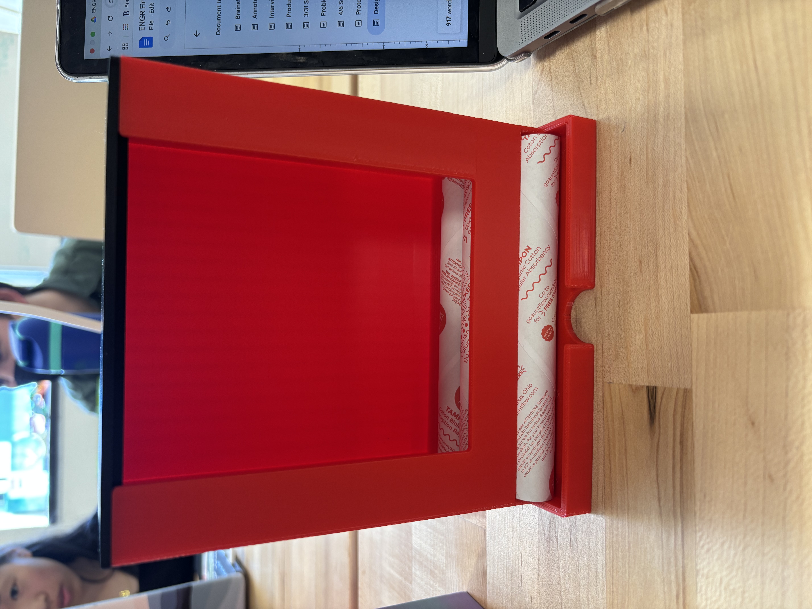
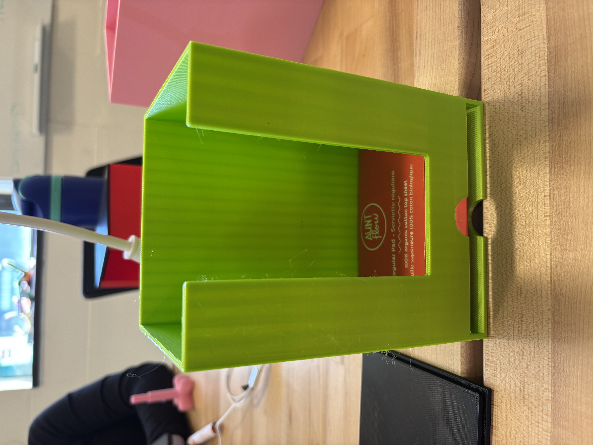
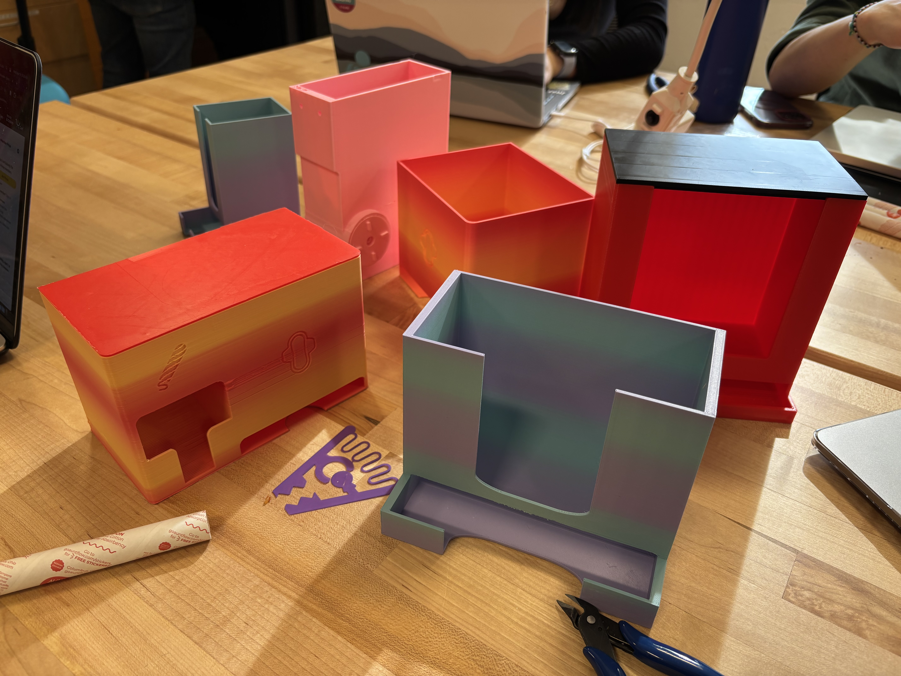

Project 5
Part 1: Ethnographic Interviews
Stuff

Empathy and Journey Maps for our interviews
#1: Freshman living on campus with experiences using the dispensers mainly in emergency situations. Does not find they can entirely depend on the dispensers due to restocking issues.
#2: Senior involved in a menstrual product accessibility project on campus. This is their “baby” and has put a lot of effort in coordinating students with the restock process and communicating with campus partners to expand and maintain the project.
#3: Senior living on campus with previous experiences using menstrual product dispensers on campus and varying access across dorms.
#4: Senior involved in community living on campus and the restocking process for freshmen dorms on campus.
Part 2: Problem Definition & Brainstorming
Our interviews went well. All my groupmates did their part for the interview process and we had some good thoughts for the next stage in the process. Our next step was to hone our problem statement and create a thematic analysis.
For our thematic analysis, we split into installation, restocking, and characteristics of the dispenser.
Next, we created insight statements for our three categories to summarize our 3-7 post-its into a single goal or idea. This was probably the most difficult part of the process thus far. We all had ideas, hence the many post-its, but it’s hard to condense into one insight statement, without discarding everyone’s input. After some brainstorming we were all satisfied with our final insight statements.

Next, we created “How Might We” statements, which guide our imagined thoughts and ideas into something tangible. This reminded me of our first lecture where it’s important to set the constraints, so we have something to push against. The HMW step helped us funnel our insight statements into something we can actually design.

How Might We
The brainstorming and ideation process was when we combined our insight statements, HMW statements, and any random thoughts about our design onto paper (well, post-its). This, evidently, was a bit of a chaotic process. I appreciate William’s wild ideas, and Eric and Erica shared similar ideas as I did. We grouped these together and summarized them under our HMW statements.

Brainstorming & Ideating
Finally, we created a storyboard to give a visual representation of how a user would use our product to solve their problem. In our case, we divided 12 frames into installer, restocker, and user. I think this was the most helpful step because we had something tangible and visual to measure if we’ve achieved our goal. Essentially, we’ve made our goal SMART. Specific, Measurable, Attainable, Relevant, and Timely. I’m eager to take the next steps in our project!

Storyboard
Part 3: Prototyping
Feedback Capture Grid

In summary, our feedback was to make the dispensing mechanisms more accessible. For example, the finger slit to pull out a pad is a bit tight for most people’s fingers. So for our second prototype, we made the slit bigger and wider. This gave good results.
Regarding the tampon dispenser, we had some good ideas for a dispensing mechanism, but our feedback was mixed. Our first idea was a gear-like mechanism that dispenses one tampon at a time. However, this could get stuck and was a bit gimmicky. For our future prototypes we’ll adjust this mechanism to fit most products, or we’ll just scrap the gear idea.
Tampon dispenser
Pad dispenser
Prototypes
Design Review
Analyze
We presented our initial storyboard prototype with the class and several physical prototypes with other projected groups which offered many insights into sources of improvement for future prototypes as well as questions about our design and product.
Based on our storyboard presentation, the class liked how our user cycle included three main categories of users: installers, restockers, and users who all have different action steps in relation to the dispensers. One major question centered around simplifying the design: What can our design accomplish that a simple basket doesn’t? Some criticisms in our storyboard concerned having a system that could keep track of the live availability of products for each dispenser using some kind of sensor mechanism instead of simply just reporting when dispensers were empty using a QR code. Some other ideas that arose from the class discussed ways in which we can measure the limitations of our design such as measuring the amount of force that it can withstand or how long it takes to restock products. We also got some feedback suggesting ways to incorporate a more efficient locking system and making our design parametric so it is adaptable for different products or locations outside of campus.
We then moved on to testing our physical prototypes with other groups in class. We presented three main prototypes: one pad dispenser, one tampon dispenser with a sloped feature, and another tampon dispenser with a rotating wheel mechanism to dispense one tampon at a time.
From this feedback session, users appreciated how our design would limit people to taking one product at a time–preventing people from taking a big bunch of products which could lead to stock-outs. Users also enjoyed the novelty of the spinning wheel in the tampon dispenser which made it a more enjoyable experience.
However, there were also criticisms of these prototypes. With the spinning wheel prototype, the slots to hold the tampons were too tight-fitting, meaning the tampons wouldn’t leave the wheel attachment for people to actually access the product. There were accessibility issues in our other two prototypes, specifically in being able to take the product out of the dispenser. To remove a single tampon or pad, it required users to have a good amount of dexterity and the process could be more challenging for people with bigger fingers.
From these criticisms, we had many ways to improve our designs. One change could be making the design parametric so other brands of tampons and pads could fit in the dispenser, especially if these dispensers were installed in locations outside campus. Users also suggested modifying the opening of the dispenser to be in the back or the side instead of the top. In terms of accessibility, the finger cutouts could be larger and deeper. For actual functionality of the dispenser, the amount of tolerance in the fit of the lid and dispensing holes for tampons could also be increased as well as the ramp position and angle so tampons could be dispensed.
Prioritize
From our analysis, we determined our top guiding principles, considering a balance between partner principles, design principles, and designer principles. Our partner principles address the explicit needs of our users, as revealed by the interviews and testing we conducted, such as accessibility, reliability, and ease of use. Our design principles consider the functionality of our dispensers and how well they accomplish the task of delivering products one-at-a-time. Finally, our designer principles represent the values our team feels are critical to the design, including the adaptability of our dispensers for a wide range of locations, users, and products. A summary of our top guiding principles is as listed below:
- Accessibility (partner): location and availability for students
- Ease of Use and Convenience (partner)
- The user can easily grab a product when in need
- For users with different ranges of motion + dexterity
- Streamlined + Simple (design)
- Remove button, easier lock, fewer jams
- Process + interaction with user; fewer steps
- Quick and efficient restocking process
- Adaptability to Other Settings (designer): parametric, open-source, cost effective, easier install
Redefine and Ideate
- After considering our newly defined priorities, we revised our “How Might We…?” statements to reflect the new information that we’ve gained:
- …hang up the dispenser?
- …design and create an effective loading tool that…
- …can hold the products while transporting them to bathrooms?
- …is lightweight and easy to carry?
- …can be inserted and removed from the dispenser easily?
- …maintain a one-at-a-time design while removing the overly-complex buttons?
- …incorporate real-time availability of products so that users can…
- …rely on the products?
- …know when and where they are available?
How might we…
Finally, we generated the following (realistic and ambitious) ideas for future prototypes to address our redefined “How Might We?” statements: